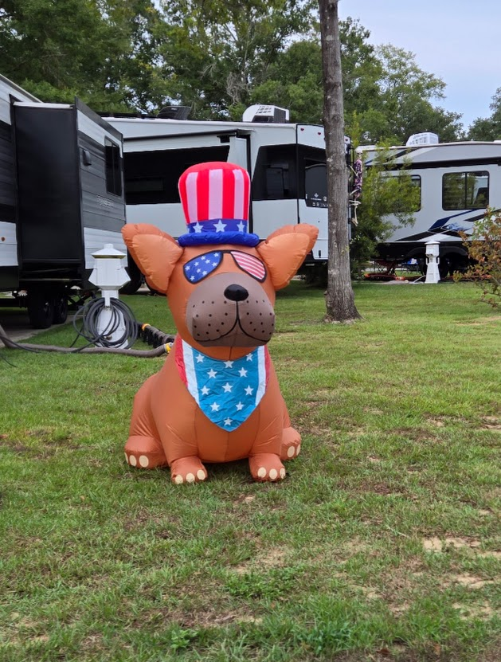
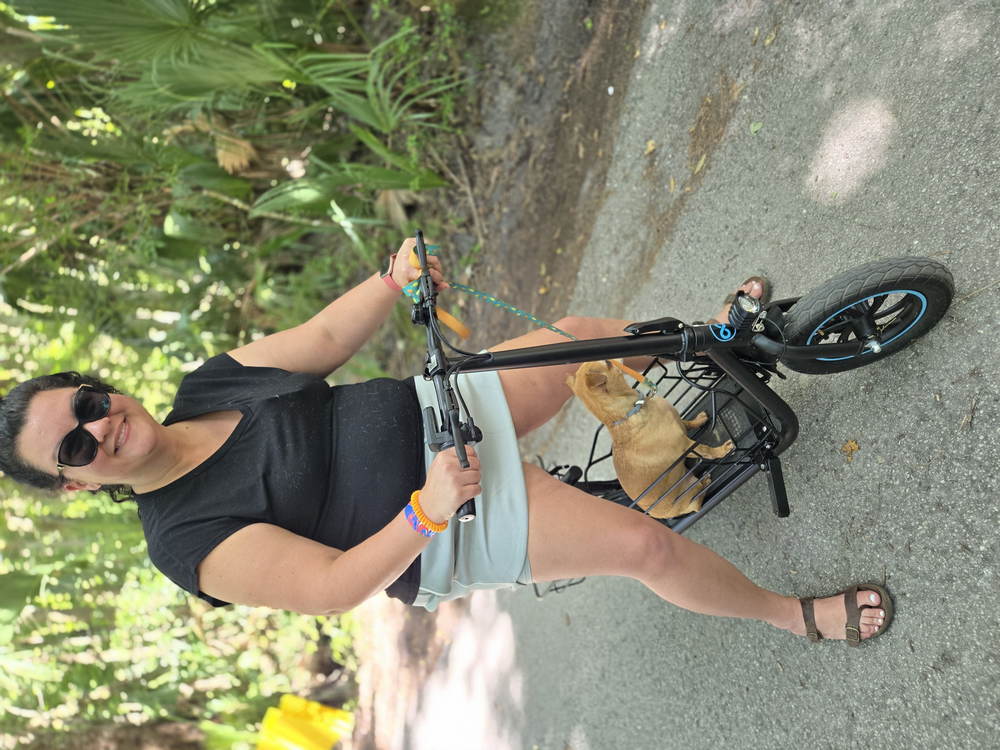
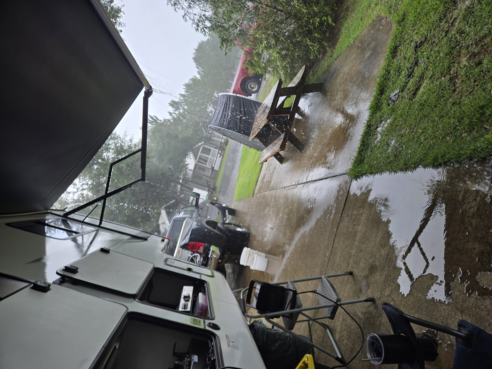

How Our Family Does July 4th at Splash RV Resort
Multiple campsites, a rotating family cookout, e-scooters through the resort, and Willow on Mallory's lap for the fireworks finale. This is our 4th.

Disclosure: This post contains affiliate links. If you buy through our links we may earn a small commission at no extra cost to you. We only recommend gear we actually use.
If you've never spent July 4th weekend at an RV resort with family scattered across multiple campsites, you're missing one of the best versions of this holiday. No traffic jams to a public park. No fighting for a patch of grass. Just a few families, sites close enough to holler across, and a week of cookouts nobody planned but somehow all came together.
We've done Splash RV Resort in Milton, Florida more than once, and it's become one of those trips we look forward to every year. The kids love it, the dogs love it, and honestly — the adults do too.
Why Splash works for a family group trip
Milton sits just east of Pensacola — close enough to the Gulf Coast for that beach-adjacent feel without beach-adjacent prices. Splash is right off I-10, which makes it easy for family coming from multiple directions.
The sites are full-hookup concrete pads on level ground — plenty of room for our Sabre 36FLX. Traveling as a group? Don't just book online and hope. Call ahead; the staff is friendly and can often put your sites near each other.
At a glance: Splash RV Resort
- Water fun: family pool, adults-only pool, lazy river, waterslides, hot tub
- Food & fun: tiki bar, food trucks, camp store, arcade, summer live music and events
- For dogs: large dog park with a washing station
- Hookups: full hookups with 50-amp service
- Day trip: Navarre Beach is about 23 minutes away
Amenities as of our last stay — check the resort's site before you book.
We've done a lot of campgrounds. Splash during the 4th is in a category of its own — resort amenities with that laid-back RV community vibe.
The multi-site cookout rotation
This is the part nobody plans and yet it becomes the highlight every year. When family is spread across a few nearby sites, dinner stops being one person's job and turns into an unofficial rotation.
One night someone fires up the grill for brats and burgers. Another night it's steaks at another site. Some nights we keep it easy — crockpot meals going all day and a sausage, cream cheese, and Rotel dip that disappears in about ten minutes.
And then there's seafood boil night. Shrimp, sausage, corn, and potatoes dumped onto a newspaper-covered table — messy, loud, and still being talked about on the drive home.
Seafood boil tip: gear up right
Bring a large outdoor propane burner — your RV stove won't cut it. A 30-qt or larger stockpot, Old Bay, and more shrimp than you think. Someone always wants seconds. Keep paper towels and a trash bag within reach.
Getting around the resort: the Gyroor C1S
Splash is big. Walking from your site to the pool, the food trucks, and another family's campsite gets old fast in July heat. Our Gyroor C1S solved that. It's a seated e-scooter, but the 12-inch tires and solid frame make it ride more like an e-bike. The 550W motor handled the resort's hills without complaint, and it folds into the truck bed. Real-world range lands around 10–15 miles depending on terrain and rider — more than enough for a full day.

Gyroor C1S Seated E-Scooter
550W motor, 12-inch tires, adjustable seat, dual disc brakes, front and rear baskets. Foldable.
Check price
Bike / Scooter Storage Tent
Keeps the scooter out of the rain and the site organized under the awning. Get one with stakes and tie-downs.
Check priceWillow and the fireworks
Willow has never once turned down a road trip and has strong opinions about which camp chair is most comfortable (Mallory's, always). Fireworks are a different story. She doesn't bolt or panic, but she's not pretending to be unbothered either. When the show starts, she finds Mallory and that's where she stays. Mallory gets the best seat and Willow gets her person.
If your dog is more anxious than Willow, a busy resort on the 4th is a lot. Keep their daytime routine normal, get them good exercise, set up a quiet retreat spot in the RV, and talk to your vet ahead of time about calming options.
Why this trip works every year
July 4th at a campground turns a holiday that can feel chaotic into something intentional. You set up once. The kids have a pool, a lazy river, and sparklers at night. The adults have a cooler, a cookout rotation, and a reason to sit outside until midnight. The dogs run around like they own the place.
And if you pull into Splash and see a big 5th wheel, a dog who thinks she's the trip director, and a toddler already covered in pool water — that's probably us. Come say hi.
Happy 4th, y'all.
— James & Mallory 🐾
What We Pack Every Single Trip (Toddler + Dogs Edition)
From snacks to sanity-savers — the packing list we actually use. Every product linked.